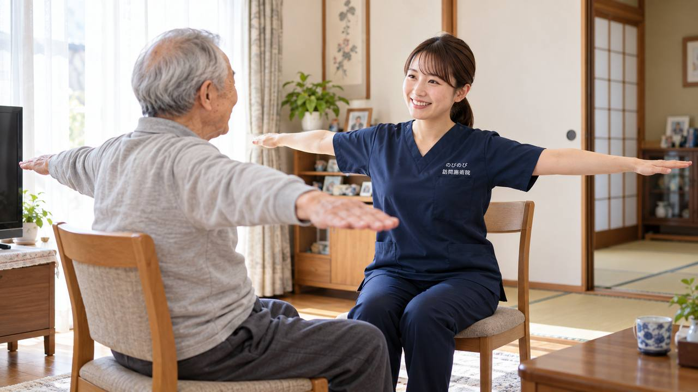

顔が下を向いてしまう、前かがみで歩きにくい、まっすぐ座っていられない、背中や首が重い。姿勢が変わる背景にはさまざまな原因があり、見きわめは医師の役割です。ただ、引っぱられて固くなった首・背中・体幹の筋肉を和らげ、今ある動きを保つ部分は、ご自宅にうかがう鍼灸・マッサージでお手伝いできます。
まず大事なところから。姿勢が変わる背景にはさまざまな原因があり、見きわめは医師の役割です。ただ、固くなった首・背中・体幹の筋肉を和らげ、動かしやすさを支えることは、訪問鍼灸マッサージがお手伝いできます。医師が施術を必要と認め、通院がむずかしい状態なら、はり・きゅうの医療保険の対象になる場合があります。急に姿勢が変わった、手足の力が入らない、飲み込みにくいといったときは、まず医療機関を受診してください。
首が下がる・前かがみになる背景
年齢とともに、あるいは何らかの病気の影響で、首が前に下がったり、背中が丸くなって体が前に倒れたりすることがあります。首や背中を支える筋肉の力が落ちる、筋肉が固くこわばる、背骨の変化などが重なって起こります。前を見づらい、食事や会話がしにくい、歩くとバランスがとりにくい、といった困りごとにつながります。背景にはいろいろな原因があるため、まず医師に診てもらい、原因に応じた対応を確かめることが欠かせません。
背中の丸まりが主で、首の下がりはそれにともなうものという場合もあります。円背という状態そのものについては円背とは？背中が丸くなる原因と、放置したときに起こることにまとめました。
こんなときは、先に医療機関へ
短い期間で急に姿勢が変わった、手足の力が入らない・しびれる、飲み込みにくい・むせる、ろれつが回らない、強い痛みをともなう。このようなときは、神経や筋肉の病気などが疑われ、早めに診てもらうべき状態のことがあります。まず医療機関を受診してください。鍼灸は、こうした急を要するサインがないことを確かめ、医師の見立てをふまえたうえで、固くなった筋肉を和らげる面で力になれればと思います。
鍼灸・手技でできること
姿勢の変化そのものを元に戻すことはできませんが、前かがみの体では、首の後ろや背中、腰の筋肉が引っぱられて固くこわばり、痛みや重さが出ていることが多いものです。はりやお灸、手技では、これらのこわばりを和らげ、めぐりをうながすケアを行います。固くなった部分がゆるむと、動かしやすくなったと話される方もいます。感じ方には個人差があります。無理に姿勢を正そうと強い力を加えるのではなく、こわばりをやさしくほどいていく、という考え方でケアします。
残っている動きを、大切に保つ
前かがみの姿勢が続くと、動かさない部分がますます固まり、動ける範囲が狭くなっていきます。今できる動き、たとえば首を少し上げる、背すじを軽く伸ばす、肩を回すといった動きを、痛みの出ない範囲で続けることが、動かしやすさを保つ助けになります。うかがったときに、その方の状態に合わせた無理のない動きをお伝えし、ご家族にも手を添えるコツをお伝えします。がんばりすぎず、心地よい範囲で続けることが大事になります。
食べること・前を見ることを支える
首が下がると、前が見えにくく歩きづらいだけでなく、食べ物が飲み込みにくくなることもあります。首や肩まわりのこわばりを和らげ、少しでも顔を上げやすくすることは、食べることや会話を支えるうえでも意味があります。飲み込みに心配があるときは、医師や言語聴覚士など専門職とも連携しながら、できる範囲で進めます。毎日の食べる・話すを支えることを、大切に考えています。
ご家族の介助の負担も、やわらげる
前かがみの方を支えるご家族は、立ち上がりや移動の介助で、腰や肩に負担がかかりがちです。ご本人の体のこわばりが和らぐと、介助が少し楽になったと話されるご家族もいます。うかがったときに、負担の少ない支え方や、ご家族自身の体のケアについてもお伝えできます。介護する側とされる側、両方の体を気づかいながら関わることを心がけています。ご家族の疲れも、遠慮なくお聞かせください。
気候や気圧の変化で、こわばりが増すことも
季節の変わり目や、気圧が下がる日などに、体のこわばりや重さが強まると感じる方もいらっしゃいます。前かがみの姿勢が続いている方は、もともと筋肉が張りやすいため、こうした変化の影響を受けやすいこともあります。無理に動かそうとせず、温めてほっとゆるめる時間をもつことが助けになります。うかがったときは、その日の体の張り具合を確かめながら、負担のない範囲でこわばりをほどいていきます。
焦らず、心地よさを積み重ねる
姿勢の変化は、すぐに元どおりになるものではなく、焦りや落ち込みにつながることもあります。それだけに、今日は少し首が上げやすい、背中が軽くなった、といった、その日その日の心地よさを積み重ねていくことを大切にしています。体がゆるむ時間は、気持ちがほっとする時間にもなります。うかがうたびに体の様子をていねいに確かめ、無理のないペースで続けていきます。
気になる費用のこと
首や背中の慢性的な痛み・こわばりについて、医師が鍼やお灸を必要と認め、通院がむずかしい状態であれば、はり・きゅうの医療保険が使える場合があります。1回の総額は3,950円で、自己負担は負担割合の分のみ。1割の方でおよそ395円が目安です。姿勢の変化とは長くつきあっていくことが多いため、続けやすい料金であることを大切にしています。対応エリア内であれば出張費は別にかからず、集金は月ごとにまとめて行い、その月の施術の内訳がわかる明細をお渡しします。エリアの境目が気になる方は対応エリアのページをご覧ください。
受けはじめるまでの流れ
はじめに、お電話などで、姿勢の変化の様子やいつ頃からか、困っている場面、通院している医療機関をお聞かせください。医師の見立てをふまえ、首・背中・体幹へ鍼灸でできることをご説明します。急な変化があるときは、受診を先におすすめすることもあります。まずは一度、お話をお聞かせください。
よくある質問
姿勢は鍼灸で元に戻りますか？
姿勢そのものを元に戻すものではありません。固くなった筋肉を和らげ、今ある動きを保ち、つらさを軽くする位置づけです。原因の診断と治療は医師にご相談ください。
寝たきりに近くても受けられますか？
はい。寝たまま、座ったままの姿勢でも受けられます。その方の状態に合わせて、無理のない程度にケアします。
家族が手伝える体操はありますか？
痛みの出ない範囲での首上げや肩回しなど、その方に合った動きをお伝えします。ご家族が手を添えるコツもお伝えします。
飲み込みが心配なのですが
首まわりを和らげることでお手伝いできる面もありますが、飲み込みの評価は専門職の役割です。必要に応じて医師や言語聴覚士との連携をおすすめします。
費用は1回いくらですか？
1回の総額は3,950円で、自己負担は負担割合の分のみです。1割の方でおよそ395円が目安になります。対応エリア内であれば出張費は別にかかりません。
どのあたりまで来てもらえますか？
豊中・吹田・茨木・箕面・摂津・池田、尼崎・伊丹、大阪市の淀川区・東淀川区・都島区・北区・旭区にうかがっています。

背骨が左右に曲がる（側弯症）の痛み・姿勢でお悩みの方へ｜訪問鍼灸マッサージ
続きを読む
飲み込みづらさ・むせ（嚥下）が気になる高齢の方へ｜首まわりのケアと訪問鍼灸マッサージ
続きを読む
終末期を住み慣れた家で穏やかに｜最期まで自宅で過ごす方への訪問鍼灸マッサージ
続きを読む
がんの在宅療養を支える体のケア｜痛み・こわばり・むくみと訪問鍼灸マッサージ
続きを読む
起き上がり・立ち上がりがつらい高齢のご家族へ｜下肢の筋力低下を支える訪問鍼灸
続きを読む